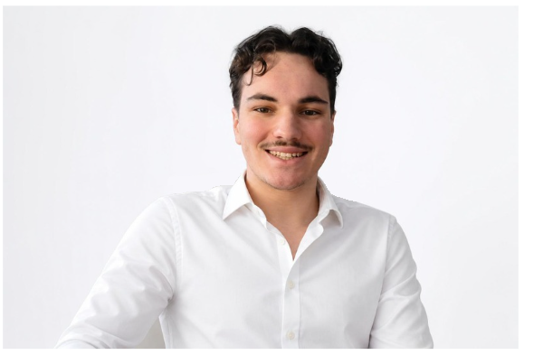

Rugby
I play rugby with the Toulouse INP club, alongside my studies. It is a team sport that teaches me solidarity, discipline and effort over time.
First-year engineering student at ENSEEIHT (Toulouse INP), in the Electronics, Electrical Energy and Automation (3EA) programme.

I am a first-year student at ENSEEIHT, in the Electronics, Electrical Energy and Automation (3EA) programme. Outside class, I play rugby with the Toulouse INP club and I play guitar and piano. This e-portfolio will grow over my three years of engineering studies: projects, international mobility, engagement and career steps.
First year at ENSEEIHT, 3EA programme (Electronics, Electrical Energy and Automation).
This section will be completed as my studies progress.
This section will be completed as my studies progress.
Languages, experiences abroad and international projects.
This section will be completed as my studies progress.
This section will be completed as my studies progress.
This section will be completed as my studies progress.
What I do for the planet and for others.
This section will be completed as my studies progress.
What I do outside of class, and what it teaches me.
I play rugby with the Toulouse INP club, alongside my studies. It is a team sport that teaches me solidarity, discipline and effort over time.
I have been playing guitar for five years.
I am learning piano on my own, out of curiosity and for pleasure.
My documents, my experiences and my professional plan.
This section will be completed as my studies progress.
This section will be completed as my studies progress.